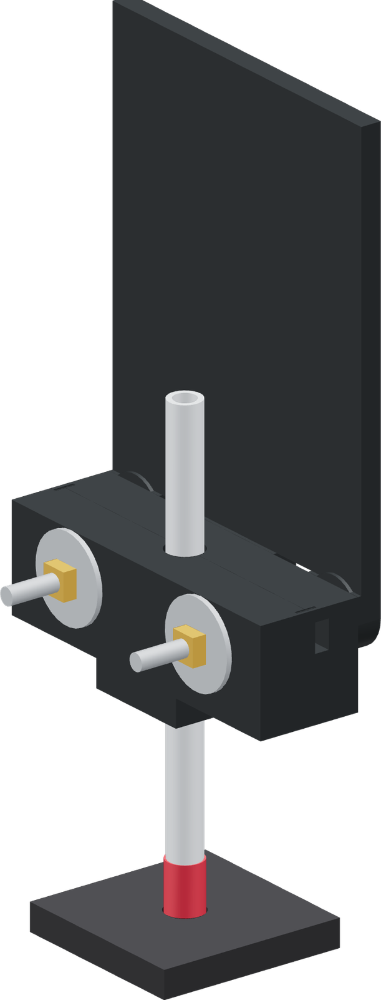

Work the thimble onto the tube
Lift the T handle and attached carrier out of the base. Use the grip and cap-support puck to fit the seal evenly outside the donor.

- Grip the tube with the T handle far enough from the end to leave the entire thimble and both marks accessible.
- Set the fresh TPU 85A thimble cap-down in the puck's shallow recess. Its open end faces the tube.
- Center the square-cut tube end at the opening. Work the sleeve rim over it evenly around the circumference while advancing the tube.
- Press both T-handle wings evenly in small increments. Pause tube advance while working the rim evenly around its circumference; keep the sleeve straight until the tube end contacts the annular cap.
- Lift the sleeved tube off the cap-support puck. The puck stays on the bench for the donor insertion operation.
Finished when
The sleeve wall is even, with no fold or roll, and the square-cut tube end rests on the cap. The cap hole remains open into the tube bore.